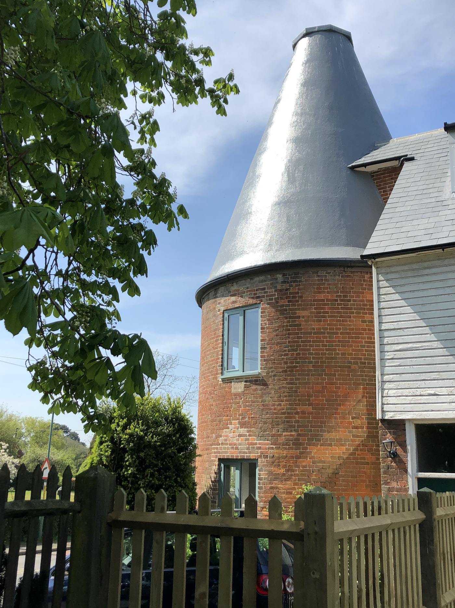
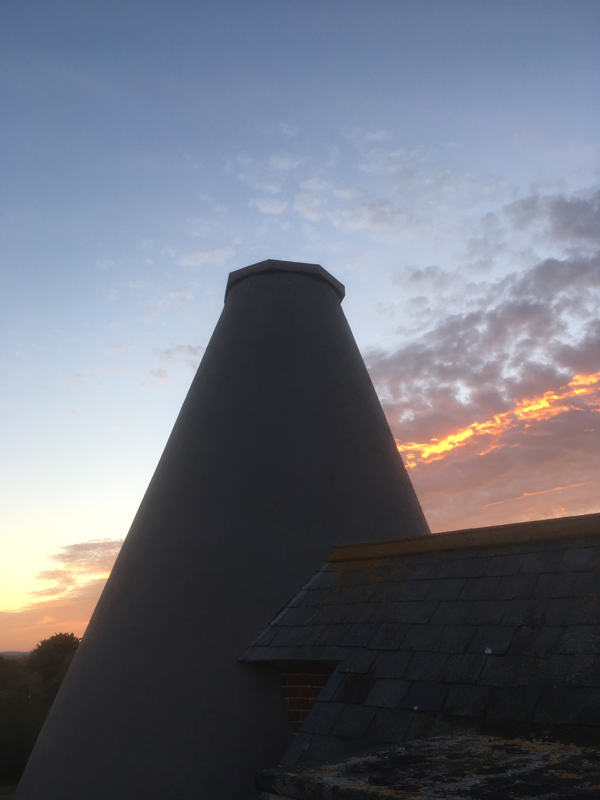

Oast House Diary
Over the last three years we have been gently refurbishing this strange building in the heart of Wittersham on the Isle of Oxney. Needless to say it has been an all consuming project and is of course far from over. Much is done with scant resources, eking out materials, reusing much of what is here and finding the essential simple qualities of the building, while improving its thermal performanace and making a thoroughly livable home.



